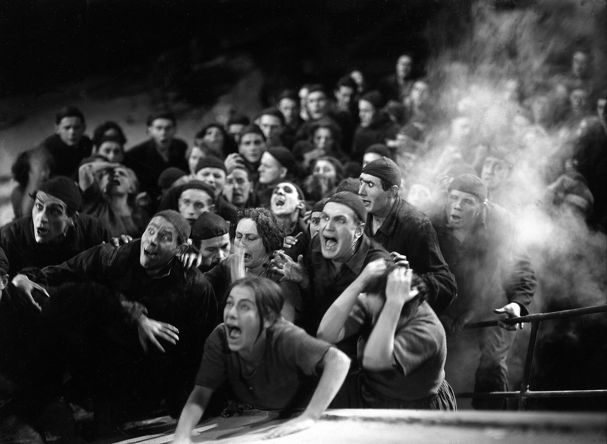
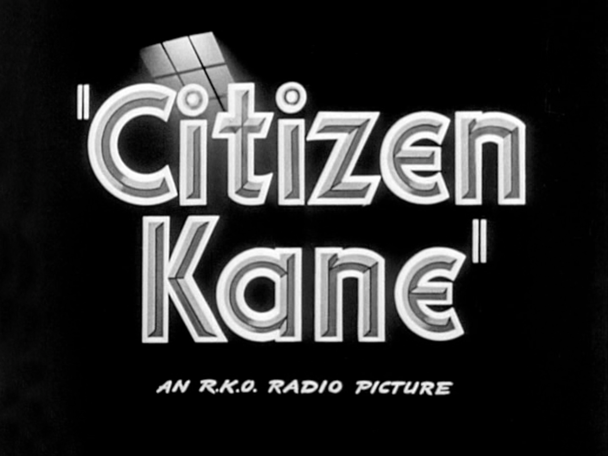
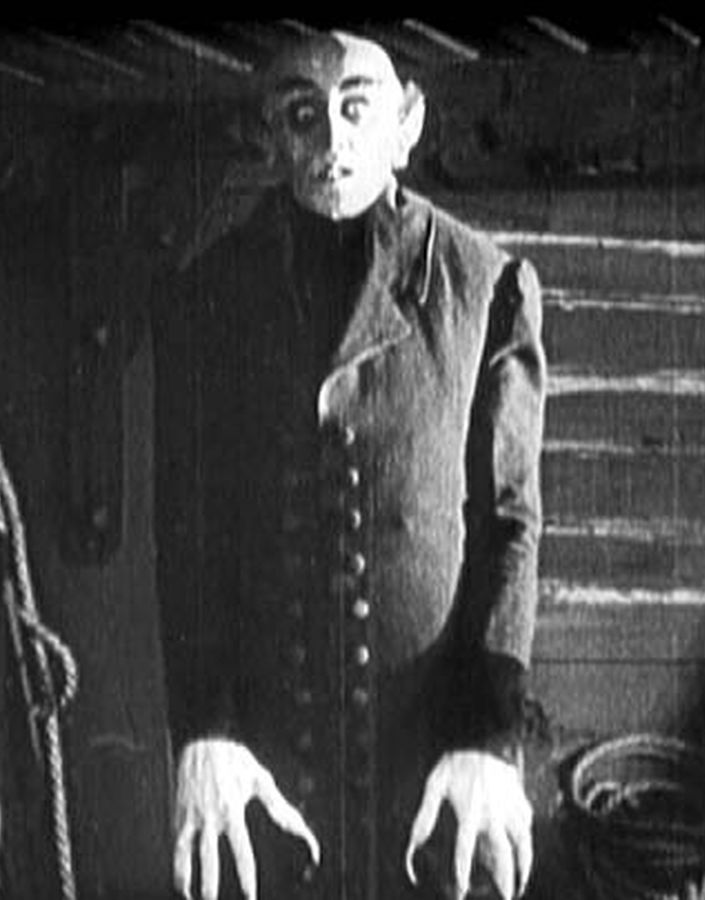
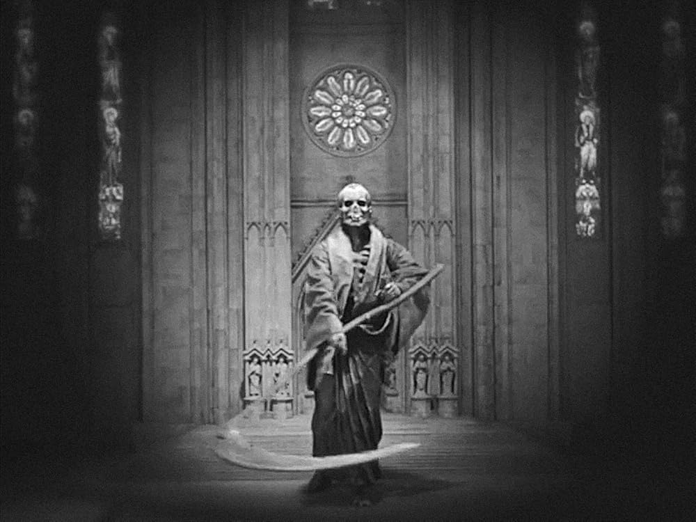

景别与角度
景别回答「摄影机离人多远」；角度回答「从哪个方向和高度看」。两者一起决定观众和角色的心理距离。
景别
是什么
景别（Shot Size）就是画面里人物占多大——从「人像蚂蚁」到「只剩一只眼睛」。
- 远景 / 大远景：交代环境，人很小。开场、孤独感常用。
- 全景：从头到脚完整入画，动作和空间都清楚。
- 中景：膝盖或腰部以上，最常用的「讲故事」距离。
- 近景：胸部以上，观众开始盯表情。
- 特写 / 大特写：脸或局部（眼睛、手、物件），情绪最强、信息最集中。

.jpg){kind=link}



.jpg){kind=link}
影像例子
推荐拉片镜头
- 《大都会》（1927）工人城：人在建筑里有多小。
- 《公民凯恩》预告片（1940）：演讲者与人群的尺度。
- 《诺斯费拉图》（1922）：奥洛克的脸部特写。
只写片名和场面。分钟数随修复版和网络拷贝变化，没有对某一份文件逐帧核对，所以不标时间点。
为什么重要
换景别 = 换观众和角色的「亲密程度」。远景像旁观，特写像贴在脸上——导演用这个控制你什么时候冷静、什么时候心疼。
怎么用
叙事节奏常见套路：先用远景/全景建立空间，中景推进情节，近景/特写砸情绪。对话戏里情绪升级时，景别往往会一寸寸推近。
练一练
用手机拍同一个人泡茶：远景、全景、中景、近景、特写各一条，剪成 30 秒，感受信息量变化。
一句话记住：越远越客观，越近越主观。
角度
是什么
角度（Camera Angle）是摄影机相对人物的高度和方向。
- 平视：中立、真实，像旁观者。
- 仰拍：从下往上——高大、威胁或力量。
- 俯拍：从上往下——渺小、无助、被控制。
- 顶拍（上帝视角）：正上方，强设计感或宿命感。
- 荷兰角：画面歪斜——不安、失衡、精神错乱。
- 主观镜头（POV）：观众「变成」角色，看到角色看到的。
- 过肩镜头（OTS）：越过一人肩膀拍另一人，对话戏标配。

_-_Death.jpg){kind=link}

影像例子
推荐拉片镜头
- 《大都会》（1927）「死亡」雕像：仰拍。
- 《公民凯恩》预告片：室内低角度，看见天花板。
只写片名和场面。分钟数随修复版和网络拷贝变化，没有对某一份文件逐帧核对，所以不标时间点。
为什么重要
同一句台词，仰拍像宣战，俯拍像求饶。角度是最便宜、最有效的「权力关系」工具。
怎么用
- 想表现强势角色：试仰拍或让他占画面上方。
- 想表现脆弱：俯拍，或把他挤到画面边缘。
- 对话戏：先用过肩建立两人关系，再用正反打切表情。
练一练
拍同一个人说同一句话：仰、平、俯各一条，对比感觉差异。
小例子
审讯戏：警察常被仰拍或占画面优势；嫌疑人俯拍或坐在暗处。不用台词，权力已经写在画面上。